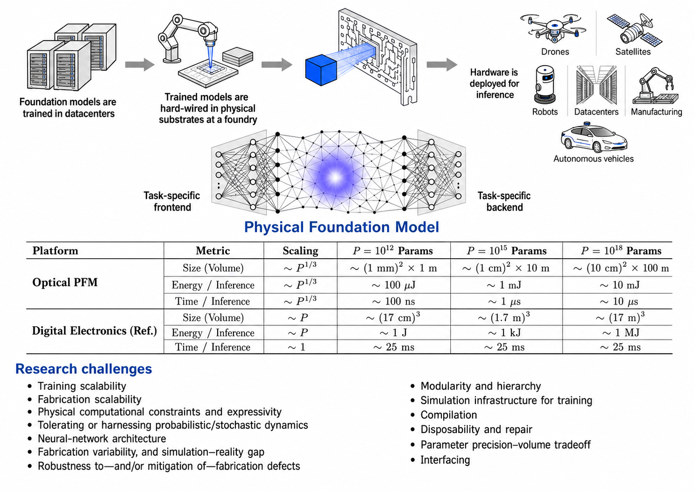

AI agent memory / multimodal intelligence / trustworthy adaptation
Novanto Yudistira
The niche is memory.
Building toward universal memory for AI agents: systems that perceive across modalities, retain experience over time, retrieve the right context, adapt continuously, and act with trustworthy reasoning.
Perceive
Encode
Remember
Reason
Adapt
Act
Research soundtrack Radical Dreamers, Noriko Mitose
Bio
Building memory that lets AI agents learn across time, modalities, and changing worlds.
Novanto Yudistira is a lecturer and researcher at the Faculty of Computer Science, Universitas Brawijaya, Indonesia. He earned a Bachelor of Computer Science in Informatics Engineering from Institut Teknologi Sepuluh Nopember, an MSc in Computer Science from Universiti Teknologi Malaysia, and a Doctor of Engineering in Information Engineering from Hiroshima University, Japan, under Prof. Takio Kurita.
His research is converging on universal memory for AI agents: a persistent, multimodal, adaptive memory layer that connects perception, experience, retrieval, reasoning, and action. This direction grows from his work in deep learning, large language models, computer vision, time-series foundation models, medical AI, explainability, calibration, distribution shift, test-time adaptation, and continual learning. He has collaborated with AIST, RIKEN, Osaka University, and other partners, and is active as founder of the Deep Learning Indonesia community.
Current Roles
Memory Research
Multimodal Experience
Encoding text, images, video, time-series, sensor signals, and interaction traces into a shared memory space.
Agent Memory Systems
Working, episodic, semantic, and procedural memory with retrieval, consolidation, and long-horizon continuity.
Continual Adaptation
Test-time adaptation, continual learning, parameter-efficient updates, and training-free mechanisms for changing environments.
Trustworthy Recall
Calibrated retrieval, explainable memory use, provenance, conformal reasoning, and failure-aware agent decisions.
Roadmap
Toward universal memory for AI agents

Perceive and encode
Build shared representations across language, vision, time-series, sensors, tools, and human interaction.
Store and consolidate
Transform short-lived observations into durable episodic, semantic, and procedural knowledge without uncontrolled accumulation.
Retrieve and reason
Recall the right evidence with provenance, combine experiences across modalities, and support LLM and VLM reasoning over long horizons.
Adapt and act
Use memory to support continual learning, test-time adaptation, calibration, tool use, and trustworthy action in changing environments.
Code
Open research code
TabNet Stability and Interpretability
Code-only reproduction scripts for TabNet stability, interpretability, and multi-seed experiments.
RepositoryReFAR / DARMiXer Forecasting
Clean experiment scripts for ReFAR, DARMiXer, component ablation, and foundation-model forecasting runs.
RepositoryMoirai Calibration and Selection
Calibration, selection, and probing scripts for foundation time-series model workflows around Moirai and Chronos-style forecasting.
RepositoryThese repositories contain source code only; datasets, generated results, drafts, local paths, logs, and private working files are excluded.
News
2026 FTabR preprint released for faster retrieval-augmented tabular deep learning with K-Means pre-clustering.
2025 Recent work spans medical AI, explainable glaucoma and Alzheimer diagnosis, air-quality vision models, and test-time adaptation for forecasting.
2024-2025 Research recognition for generative batik restoration and new category discovery.
2023-2024 Teaching books on deep learning foundations and time-series prediction published.
Papers
Selected visual works

Learning Where to Look for COVID-19 Growth
Applied Soft Computing, 2021 / Explainable Conv-LSTM
Figure source: medRxiv preprint

Correlation Net for Action Recognition
Signal Processing: Image Communication, 2020
Figure source: arXiv:1807.08291

Weakly-Supervised Action Localization and Recognition
International Journal of Computer Vision, 2022
Figure source: arXiv:2012.09542

Generative Batik and Cultural AI
Prompt-to-batik research with FILKOM and FCS UB
Figure source: arXiv:2307.12122
Books
Teaching Books
2024
Buku Ajar
Deep Learning: Teori, Contoh Perhitungan, dan Implementasi
Deepublish, Yogyakarta. ISBN 978-623-02-7968-3
2023
Buku Ajar
Prediksi Deret Waktu Menggunakan Deep Learning
Universitas Brawijaya Press. E-ISBN 978-623-296-667-3
Publications
Selected Publications
2026
2025
2025
2025
Medical Vision
Two-stage CNN with weakly supervised segmentation for skin lesion classification
Multimedia Tools and Applications, Springer
2025
Test-Time Adaptation
Test-Time Training in CALF for Time Series Forecasting via Decomposition and Adaptive Freezing
ICAICTA 2025, IEEE
2022
2021
2020
2020
2017
CV
CV Highlights
2007
Bachelor of Computer Science
Informatics Engineering, Institut Teknologi Sepuluh Nopember, Indonesia.
2011
Master of Science
Computer Science, Universiti Teknologi Malaysia.
2018
Doctor of Engineering
Information Engineering, Faculty of Engineering, Hiroshima University, Japan.
2018-2020
Postdoctoral research collaboration
Informatics and data analytics collaboration with RIKEN and Osaka University.
2024-2025
Research recognition
Best Paper awards for generative batik restoration and new category discovery, plus Dekranasda recognition for GenBatik.
2023-2024
Books and teaching materials
Authored and co-authored Indonesian deep learning books on foundations, implementation, and time-series prediction.